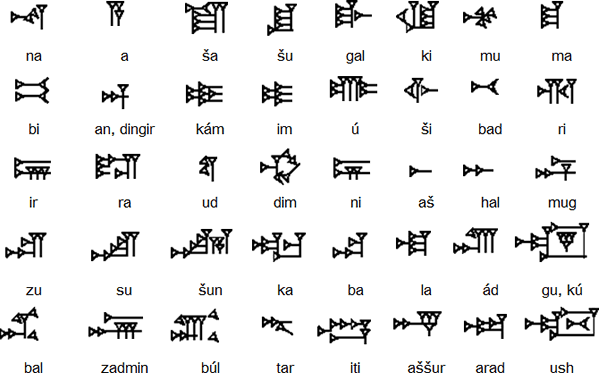

The Akkadian Empire was a powerful and influential civilization that existed in Mesopotamia (modern-day Iraq) around 4,300 years ago. The Akkadian language was the primary language spoken by the people of this empire and was used for administrative, legal, and literary purposes.
Old Akkadian is a dialect of the area of northern Babylonia. Its prestige is due to the fact that it was the language used in the power centres of the dynasty of Kish and the empire of Akkad. There are three phases in which the third millennium Akkadian may be divided: Early Dynastic Akkadian, Sargonic Akkadian, and Ur III Akkadian. The earliest evidence of Akkadian language may be found in the texts of Fara (ca. 2600 B.C.) and in the later texts of Abu Salabikh: they consist of personal names. It is around 2350 B.C. that one can see the early examples of administrative and literary texts in Old Akkadian, but the period of greater prestige of the dialect coincides with the political and cultural egemony of the Akkad dynasty in Mesopotamia (2335 - 2154 B.C.). Thus, the written evidence in Old Akkadian includes the texts dating back to the reigns of the Akkad kings and the few documents belonging to the period of the third dynasty of Ur (2112 - 2004 B.C.).
By the designation “Akkadian” it is indicated the Eastern branch of Semitic, which is extinct at present. The linguistic area of Akkadian is Mesopotamia, namely the land between the Euphrates and the Tigris rivers, which corresponds at large to the present-day Iraq. Akkadian is an inflected language. Its name, akkadûm, derives from that of the city of Akkad or Agade, the capital of the empire of the Semitic dynasty of Sargon of Akkad. The writing system of Akkadian (Akkadian cuneiform) is derived from that that was created by the Sumerian scribes to write their language, the Sumerian. According to the common historical classification, Akkadian divides into three main dialects: Old Akkadian, Babylonian, and Assyrian. In the second and first millennia B.C. Akkadian is distinct into two main linguistic areas: Babylonian in southern Mesopotamia (Babylonia) and Assyrian in northern Mesopotamia (Assyria). This is why it is also called as “Assyro-Babylonian” in modern terms. Babylonian and Assyrian show a number of phonological, morphological, and lexical differences. In these two varieties of Akkadian were written many letters, legal and administrative texts, literary compositions, rituals, prophecies, and royal inscriptions. In coincidence with an increasing diffusion of Aramaic language and the easier alphabetic script, Akkadian died out as a spoken language probably in mid-first millennium B.C., though it survives in some enclaves in centres of the southern Mesopotamia at least until 100 B.C. However, the use of Akkadian as a written language is attested until the first century A.D.
